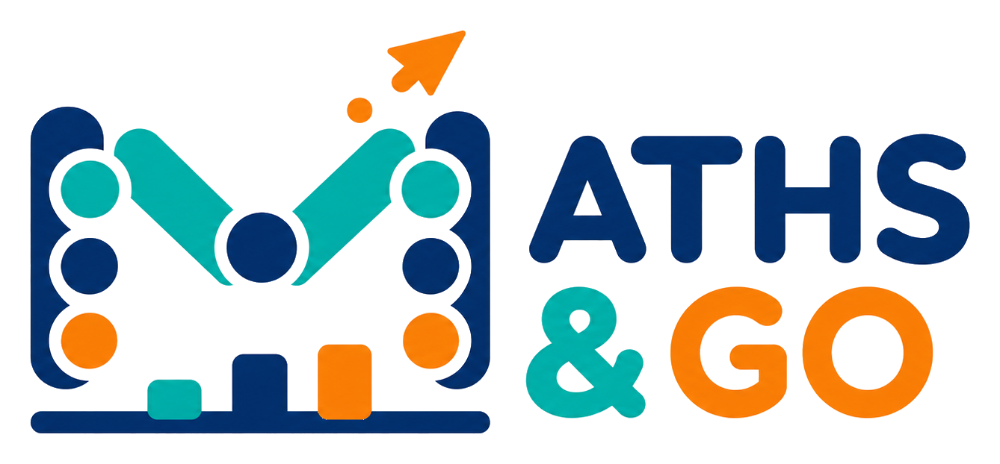

Question lointaine
Le portail corail
Un motif qui grandit sans perdre sa structure.
Combien de tuiles à l’étape 27 ?
Indice ·

Laboratoire des régularitésQuestion lointaine
Un motif qui grandit sans perdre sa structure.